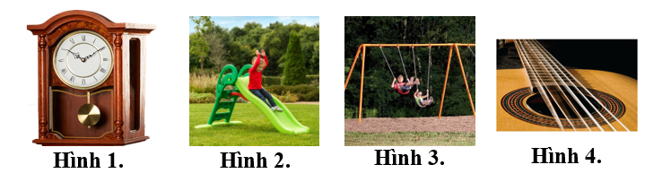

Mỗi câu có 4 phương án, chỉ chọn một đáp án đúng (0,25 điểm).
1
Nhận biết
Trong dao động tuần hoàn, khoảng thời gian ngắn nhất sau đó trạng thái dao động lặp lại như cũ gọi là
2
Nhận biết
Hình nào dưới đây không mô tả dao đông cơ?

3
Nhận biết
Trong dao động điều hòa, số dao động toàn phần vật thực hiện trong một đơn vị thời gian gọi là
4
Nhận biết
Một vật nhỏ DĐĐH theo phương trình $x=A\cos(\omega t+\varphi)$ với $A>0;\omega>0.$ Đại lượng $A$ được gọi là
5
Nhận biết
Trạng thái dao động là
6
Nhận biết
Một vật dao động điều hòa theo phương trình $x=8\cos\left(2t+\frac{\pi}{3}\right)\ cm$. Độ dài quỹ đạo của dao động là:
7
Nhận biết
Đại lượng cho biết số dao động mà vật thực hiện được trong 1 giây gọi là
8
Nhận biết
Một vật dao động điều hòa trên trục Ox. Li độ của vật
9
Nhận biết
Chuyển động nào sau đây không được coi là dao động cơ?
10
Nhận biết
Một vật dao động điều hòa theo phương trình $x=A\cos(\omega t+\varphi)$ ($\omega>0$). Tần số góc của dao động là
11
Nhận biết
Trong dao động điều hòa, nhóm đại lượng nào sau đây không thay đổi theo thời gian?
12
Nhận biết
Công thức nào sau đây biểu diễn sự liên hệ giữa tần số góc $\omega$, tần số $f$ và chu kì $T$ của một dao động điều hòa?
13
Nhận biết
Đơn vị của tần số dao động trong hệ SI là
14
Nhận biết
Một chất điểm dao động điều hòa theo phương trình $x=6\cos\left(2\pi t+\frac{\pi}{2}\right)$ cm, pha dao động của chất điểm tại thời điểm $t=3$ s là
15
Nhận biết
Một vật dao động điều hòa theo phương trình $x=6\cos\left(2\pi t+\frac{\pi}{3}\right)$ cm. Pha ban đầu của dao động là
16
Nhận biết
Đối với dao động điều hòa, khoảng thời gian ngắn nhất mà sau đó trạng thái dao động của vật được lặp lại như cũ được gọi là
17
Nhận biết
Một vật dao động điều hòa theo phương trình $x=8\cos(2\pi t)$ cm. Biên độ dao động của vật là
18
Nhận biết
Chuyển động của vật nào sau đây gọi là dao động?
19
Nhận biết
Dao động tuần hoàn là
20
Nhận biết
Một vật dao động điều hòa trên trục Ox quanh vị trí cân bằng O. Gọi A, ω và φ lần lượt là biên độ, tần số góc và pha ban đầu của dao động. Biểu thức li độ của vật theo thời gian t là